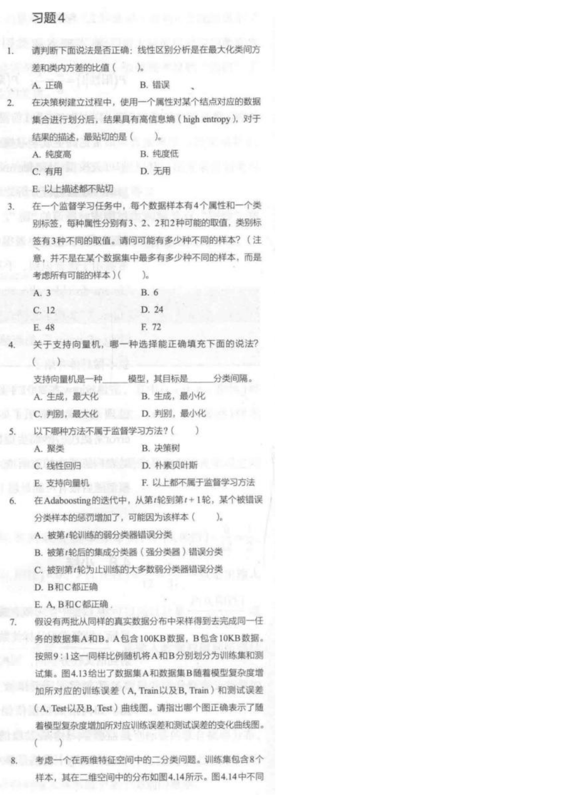
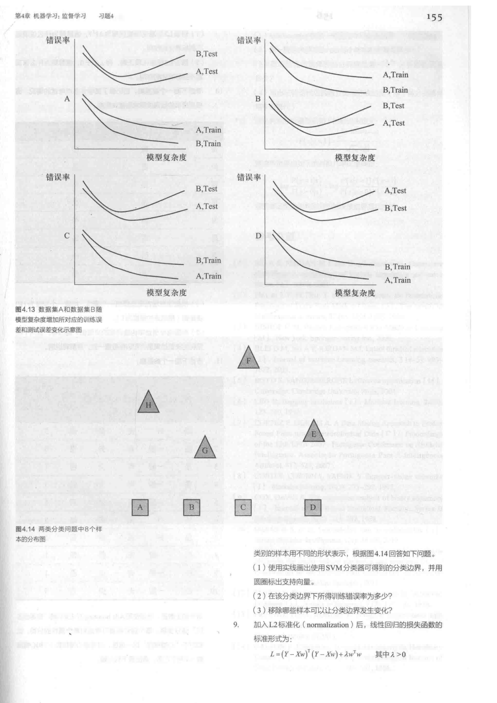
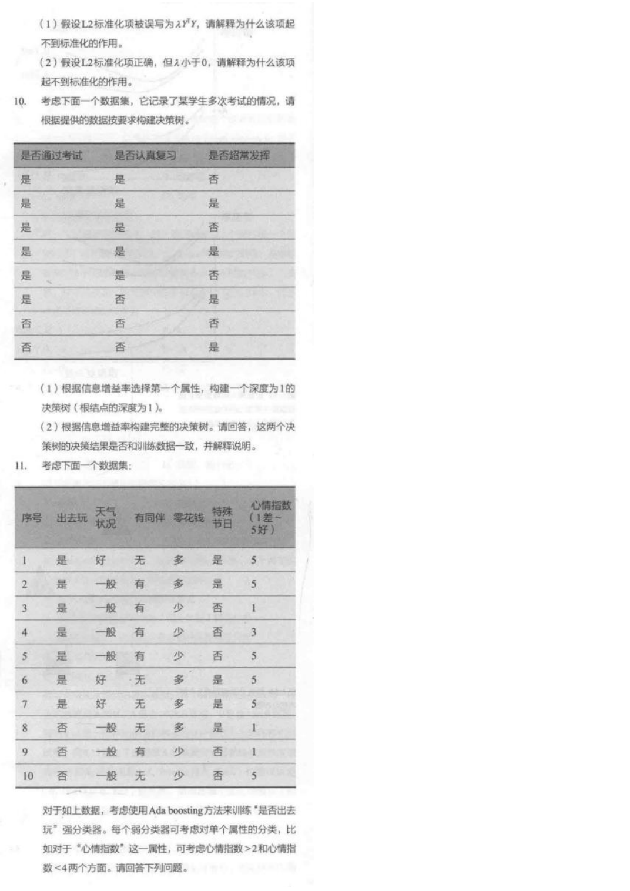

题 1：LDA 的目标
判断：线性区别分析是在最大化类间方差和类内方差的比值。
看答案和解析
答案：A。
题眼：LDA 的核心是“类间尽量分开，类内尽量集中”。数学上常写成最大化类间散度和类内散度的比值。
从零理解：如果把所有样本投影到一条线上，好分类的投影应该是：同类点挤在一起，不同类点隔得远。类间方差大、类内方差小，就是这个直觉的公式化。
对应《人工智能参考习题》扫描页第 3-5 页，也就是习题 4 的机器学习部分。这里不直接刷图：先补术语，再逐题写题眼、答案和理由，最后看解析。源题选项保持原顺序，用来贴近资料；训练时请先写理由，别猜位置。
机器学习这几页最容易让人心烦：LDA、SVM、熵、正则化、决策树、AdaBoost 一起出现，看着像一桌没切开的知识大餐。别急，我们把它切成四口吃。每一口都按人话解释 -> 题眼 -> 小例题 -> 变式走，你不是在背名词，你是在训练考场反射。
如果你对这些词没感觉，做选择题就会变成“看哪个眼熟”。先把下面这张表读一遍，再做题。
| 词 | 从零解释 | 考试题眼 |
|---|---|---|
| 线性判别分析 LDA | 想找一条投影方向，让不同类别投影后尽量分开，同一类别投影后尽量聚拢。 | 类间方差大、类内方差小、最大化二者比值。 |
| 熵 entropy | 衡量混乱程度或不确定性。一个集合越杂，熵越高；越纯，熵越低。 | 决策树、信息增益、纯度。 |
| 样本空间组合数 | 如果属性取值彼此独立地组合，所有可能样本数就是各属性取值数相乘，再乘类别标签可能数。 | “所有可能样本”“每个属性有几种取值”。 |
| SVM | 支持向量机是判别模型，核心目标是找最大间隔分类边界。离边界最近的点叫支持向量。 | 判别模型、最大化分类间隔、支持向量。 |
| 监督学习 | 训练数据带标准答案标签。分类和回归通常是监督学习；聚类通常不是。 | 标签、分类、回归、决策树、朴素贝叶斯。 |
| AdaBoost | 一轮轮训练弱分类器。上一轮被错分的样本，下一轮权重会变大，让模型更关注它们。 | 样本权重、弱分类器、错分样本权重增加。 |
| 信息增益 | 决策树选属性时，看这个属性能把数据变得更纯多少。熵下降越多，信息增益越大。 | 根结点、选择第一个属性、熵、纯度。 |
| 泛化与过拟合 | 训练误差低不等于考试好。模型太复杂时训练误差继续下降，但测试误差可能上升。 | 训练误差、测试误差、模型复杂度、数据量。 |
| L2 正则化 | 在损失函数里惩罚权重大小，限制模型不要把参数调得太夸张，从而缓解过拟合。 | lambda w^T w、lambda 大于 0、惩罚权重。 |
判断：线性区别分析是在最大化类间方差和类内方差的比值。
答案：A。
题眼：LDA 的核心是“类间尽量分开，类内尽量集中”。数学上常写成最大化类间散度和类内散度的比值。
从零理解：如果把所有样本投影到一条线上，好分类的投影应该是：同类点挤在一起，不同类点隔得远。类间方差大、类内方差小，就是这个直觉的公式化。
在决策树建立过程中，使用一个属性对某个结点对应的数据集合划分后，结果具有高信息熵 high entropy。对于结果的描述，最贴切的是？
答案：B。
题眼：熵衡量不确定性。高熵就是类别混杂，不纯；低熵才是纯度高。
为什么不是 D：“高熵”说明这次划分结果还不纯，但不能直接说这个属性完全无用。考试问“最贴切描述”，纯度低比无用更准确。
迁移：决策树选择属性时，通常希望划分后熵下降多，也就是信息增益大。
在一个监督学习任务中，每个数据样本有 4 个属性和 1 个类别标签。每种属性分别有 3、2、2、2 种可能取值，类别标签有 3 种不同取值。问可能有多少种不同样本？
答案：F。
计算：3 * 2 * 2 * 2 * 3 = 72。
为什么要乘类别标签：题目问的是“样本”，这里样本包括属性取值和类别标签。前四个属性组合有 3 * 2 * 2 * 2 = 24 种，每种属性组合又可以配 3 种类别标签，所以是 72。
常见坑：如果题目只问“输入特征向量有多少种”，才是 24；它这里明确把类别标签也算进样本。
关于支持向量机，哪一种选择能正确填充：支持向量机是一种 ____ 模型，其目标是 ____ 分类间隔。
答案：C。
判别模型：它直接学习分类边界，关心怎么把两类分开。和生成模型不同，它不优先描述“数据是怎么生成的”。
最大化间隔：SVM 希望分界线不仅能分开训练样本，还要离两边最近点尽量远。这样边界更稳，不容易被一点点噪声改变。
以下哪种方法不属于监督学习方法？
答案：A。
题眼：监督学习依赖标签。决策树、线性回归、朴素贝叶斯、SVM 都常用于带标签的分类或回归任务。聚类通常是在没有标签时找数据内部结构，属于无监督学习。
别被名字骗：“线性回归”虽然输出连续值，不是分类，但它仍然用真实数值标签训练，所以是监督学习。
在 AdaBoosting 的迭代中，从第 t 轮到第 t+1 轮，某个被错误分类样本的惩罚增加了，可能因为该样本？
答案：A。
题眼：AdaBoost 每一轮会训练一个弱分类器，然后提高这一轮被该弱分类器错分样本的权重。下一轮模型就会更重视这些难样本。
为什么不是 B/C：样本权重更新是按当前轮弱分类器的表现做的，不是等到看整个强分类器最后是否错，也不是按“大多数弱分类器是否错”来直接更新。
记忆句：这一轮错过的题，下一轮加大权重重点练。
数据集 A 有 100KB 数据，数据集 B 有 10KB 数据，二者来自同样真实分布，并按 9:1 划分训练集和测试集。随着模型复杂度增加，哪幅图最合理？
参考答案：A 图。
核心判断 1：模型复杂度增加时，训练误差一般下降；测试误差常先降后升，因为复杂到一定程度会过拟合。
核心判断 2：A 数据量更大，测试集表现通常更稳、更好，所以 A.Test 应低于 B.Test。
核心判断 3：B 训练数据更少，更容易被复杂模型“记住”，所以 B.Train 往往低于 A.Train。
因此：最合理的是 A 图：B.Test 高于 A.Test，B.Train 低于 A.Train，训练误差随复杂度下降，测试误差呈 U 型或后期上升。
如果前面七道选择题做得有点晕，正常。它们本来就是把几个模型放在一起“晃你一下”。现在先把收获收束成四句话：
参考习题第 4 页的图 4.14 给了两类点：方块是一类，三角形是一类。题目要求画出 SVM 分类边界、标支持向量、求训练错误率、判断移除哪些样本会改变边界。
根据图 4.14 回答：画出 SVM 分类边界并圈出支持向量；该分类边界下训练错误率是多少；移除哪些样本可能让边界改变？
第一步：画线。分类边界要放在方块类和三角类之间，尽量让两侧最近样本到线的距离相等并且最大。不是随便画一条能分开的线，而是最大间隔线。
第二步：圈支持向量。支持向量是离分界线最近、真正“撑住”间隔的样本。按原图位置，通常应圈靠近分界线的下方方块点和上方三角点，也就是 C/D 与 G/E 附近这些边界点；远离边界的 A、B、F、H 一般不是支持向量。
第三步：训练错误率。如果你画出的最大间隔线能把所有方块和三角分开，则训练错误率为 0。错误率计算公式是 错分样本数 / 总样本数。
第四步：移除谁会改变边界。移除支持向量可能改变分类边界；移除远离边界的非支持向量通常不改变边界。答题时要把“支持向量决定边界”这句话写出来。
小心：这里的关键不是记住某个字母，而是会判断：哪几个点离边界最近，哪些点一拿走最大间隔会变。
参考习题第 4-5 页给出加入 L2 正则化后的线性回归损失函数：
从零理解：前半段是拟合误差，表示预测和真实值差多少；后半段是参数惩罚，表示权重 w 不要太大。lambda 控制惩罚力度。
假设 L2 标准化项被误写为 lambda Y^T Y，请解释为什么该项起不到标准化作用。
答案要点：Y^T Y 只和真实标签 Y 有关，不和模型参数 w 有关。训练时优化的是 w，如果一个惩罚项不随着 w 改变，它对 w 的选择没有约束作用。
更考试化地写：lambda Y^T Y 对 w 的梯度为 0，只是给损失函数加了一个常数，不能惩罚模型参数大小，因此不能起到 L2 正则化作用。
关键句：正则化要惩罚参数，不是惩罚标签。
假设 L2 正则化项形式正确，但 lambda < 0，请解释为什么该项起不到标准化作用。
答案要点：L2 正则化需要 lambda > 0，这样权重越大，损失越大，模型才会倾向于选择较小权重。若 lambda < 0，权重越大反而让目标函数变小，这会鼓励参数变大。
更严谨地说：负的 L2 项可能使优化问题不稳定，甚至目标函数向负无穷发展，不能限制模型复杂度，也无法缓解过拟合。
记忆句：L2 是刹车，lambda 小于 0 就变成油门。
参考习题第 5 页第 10 题给了一张很小的表，让你根据“信息增益率”选择属性构建决策树。扫描图里只有两个属性和一个标签，我们先按最常见的信息增益手算。信息增益率只是在信息增益基础上再除以属性自身分裂信息；这张表里核心结论仍然很好看清。
| 序号 | 是否通过考试 | 是否认真复习 | 是否经常发挥 |
|---|---|---|---|
| 1 | 是 | 是 | 否 |
| 2 | 是 | 是 | 是 |
| 3 | 是 | 是 | 否 |
| 4 | 是 | 是 | 是 |
| 5 | 是 | 是 | 否 |
| 6 | 是 | 否 | 是 |
| 7 | 否 | 否 | 否 |
| 8 | 否 | 否 | 是 |
请根据表格选择根结点属性，并写出深度为 1 的决策树。
总数据：8 个样本，6 个“通过”，2 个“不通过”。原始熵约为 H(D)=0.811。
按“是否认真复习”分：
按“是否经常发挥”分：
结论：第一层应选“是否认真复习”。因为它能立刻把“认真复习=是”的 5 个样本完全分纯。
从零理解：决策树不是玄学，它每次都问：“用哪个问题能最快把数据分干净？”这张表里，“认真复习”显然比“经常发挥”更有用。
继续根据表格构建完整决策树。回答：这个决策树的决策结果是否能和训练数据完全一致？为什么？
第一层：仍然是“是否认真复习”。如果认真复习=是，5 条样本全是通过，所以直接判“通过”。
认真复习=否 的分支：剩下 3 条样本：
继续用“是否经常发挥”分：
答案：完整树不能和训练数据完全一致，因为序号 6 和序号 8 在两个可用属性上完全相同：认真复习=否、经常发挥=是，但标签一个是通过、一个是不通过。只靠这两个属性，任何决策树都无法同时区分它们。
考试句式：由于存在属性取值完全相同但类别标签不同的样本，训练集本身在给定属性空间下不可完全一致分类，因此决策树无法完全拟合所有训练样本，只能在冲突叶结点采用多数类或其他规则。
这一题真正想考：决策树不是万能背答案。它依赖属性是否足够区分类别；如果特征缺失、数据噪声或标签矛盾，就会出现不可分叶子。
参考习题第 5-6 页第 11 题给出“是否出去玩”的数据，要求用 AdaBoost 训练强分类器。这个题的难点不是公式多，而是你要知道每一轮做什么。
| 序号 | 出去玩 y | 天气 | 同伴 | 零花钱 | 特殊节日 | 心情指数 |
|---|---|---|---|---|---|---|
| 1 | 是 | 好 | 无 | 多 | 是 | 5 |
| 2 | 是 | 一般 | 有 | 多 | 是 | 5 |
| 3 | 是 | 一般 | 有 | 少 | 否 | 1 |
| 4 | 是 | 一般 | 有 | 少 | 否 | 3 |
| 5 | 是 | 一般 | 有 | 少 | 否 | 5 |
| 6 | 是 | 好 | 无 | 多 | 是 | 5 |
| 7 | 是 | 好 | 无 | 多 | 是 | 5 |
| 8 | 否 | 一般 | 无 | 多 | 是 | 1 |
| 9 | 否 | 一般 | 有 | 少 | 否 | 1 |
| 10 | 否 | 一般 | 无 | 少 | 否 | 5 |
初始每个样本权重相同。第一轮 AdaBoost 会选择哪个弱分类器？第一轮前后每个样本权重是多少？
初始权重：10 个样本，所以每个样本权重都是 0.1。
第一轮弱分类器：用心情指数做规则：
这个规则会错分样本 3 和样本 10：样本 3 实际出去玩但心情指数 1；样本 10 实际不出去玩但心情指数 5。
更新权重：错分样本权重变大，正确样本权重变小，并归一化。更新后：
| 样本 | 1 | 2 | 3 | 4 | 5 | 6 | 7 | 8 | 9 | 10 |
|---|---|---|---|---|---|---|---|---|---|---|
| 第一轮后权重 | 0.0625 | 0.0625 | 0.25 | 0.0625 | 0.0625 | 0.0625 | 0.0625 | 0.0625 | 0.0625 | 0.25 |
从零理解：样本 3 和 10 被第一轮错分，所以它们下一轮更贵。第二轮分类器会更努力照顾这两个样本。
在第一轮更新权重后，继续选择第二个弱分类器，并计算它的分类器权重。
一种合理选择：选择“是否有同伴”作为第二轮弱分类器：
在第一轮后的权重下，这个规则错分样本 1、6、7、9。它们权重都是 0.0625，所以：
第二轮后权重：错分的 1、6、7、9 权重上升；正确的样本权重下降。
| 样本 | 1 | 2 | 3 | 4 | 5 | 6 | 7 | 8 | 9 | 10 |
|---|---|---|---|---|---|---|---|---|---|---|
| 第二轮后权重 | 0.1250 | 0.0417 | 0.1667 | 0.0417 | 0.0417 | 0.1250 | 0.1250 | 0.0417 | 0.1250 | 0.1667 |
为什么不是继续用 h1：第一轮后，h1 错分的样本 3 和 10 权重已经很高，再用 h1 错误率会变成 0.5，无法提供有效提升。
继续第三轮后，写出强分类器表达式。每个弱分类器可用字母替代。
第三轮示例：在第二轮权重下，“天气”“零花钱”“特殊节日”等规则可能出现相同或接近的最小加权错误率。若采用天气规则作为第三个弱分类器：
此时加权错误率约为 e3=0.2917，所以：
三轮强分类器表达式：
其中可以约定“出去玩”为 +1，“不出去玩”为 -1。最后把每个弱分类器的判断乘以自己的权重，相加后看符号。
考试更稳写法：如果题目没有强制第三轮具体候选规则，你可以写：第三轮选择当前权重下加权错误率最小的弱分类器 h3，其权重为 alpha3=1/2 ln((1-e3)/e3)，强分类器为 H(x)=sign(alpha1 h1(x)+alpha2 h2(x)+alpha3 h3(x))。再把你算出的 h3 和 alpha3 代入。
这一题真正想考：AdaBoost 的流程：初始等权重 -> 选错误率最小的弱分类器 -> 算 alpha -> 提高错分样本权重 -> 重复 -> 加权投票。
别用“我看完了”骗自己，也别用“我还没全会”吓自己。下面 6 个章，只要先拿到 4 个，你就可以进入下一页；拿到 6 个，就说明机器学习参考题卡已经有 B+ 到 A- 的底子。
下面是扫描页原图。平时先看题卡；如果怀疑题干、图像位置或选项，再展开核对。


